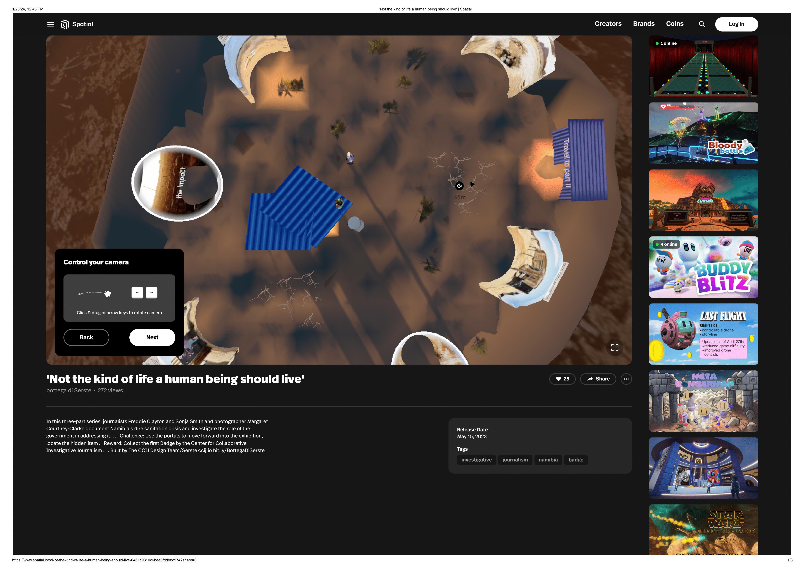
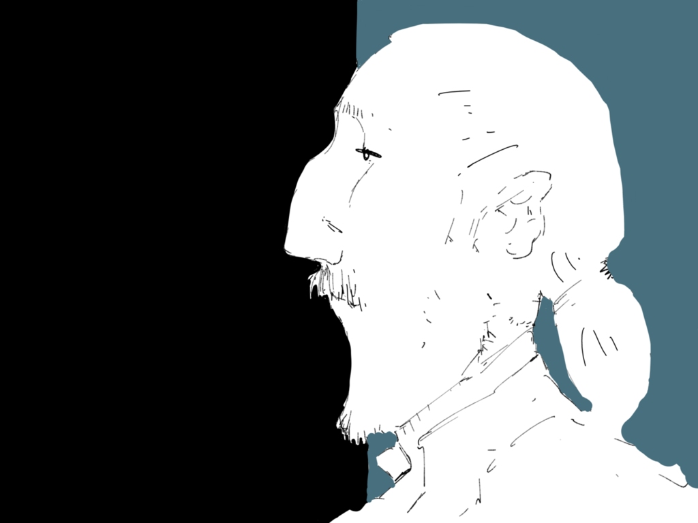
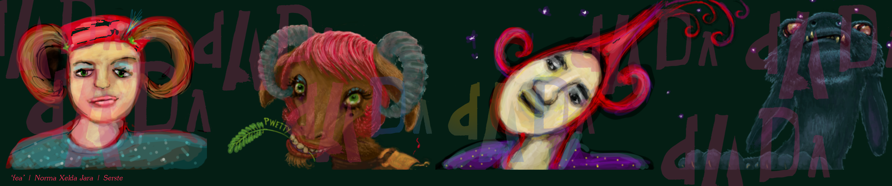
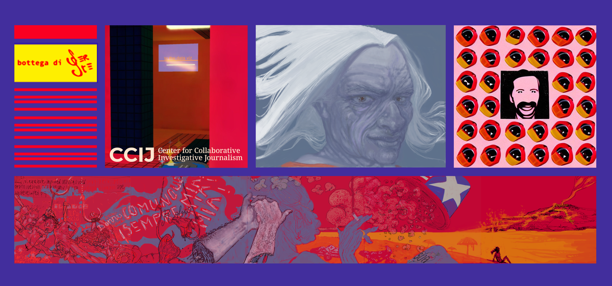
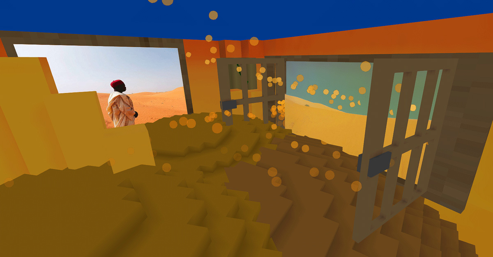
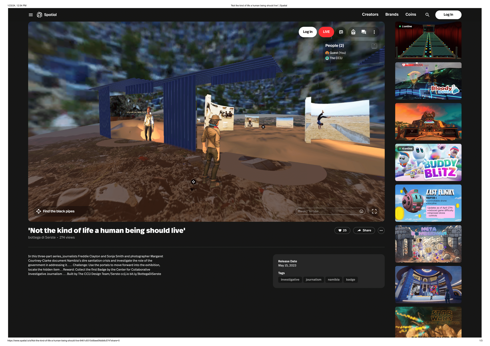
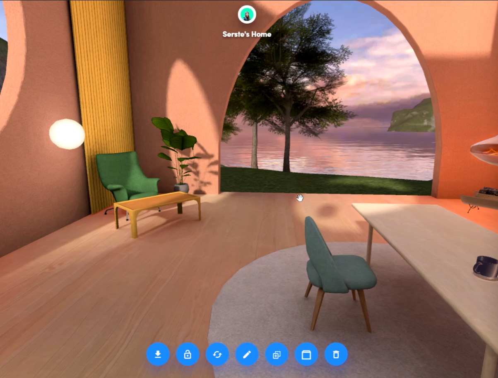

Evidence
Reporting, data, photographs and environmental measurements are treated as material for rooms, objects, mechanics and decisions.
Public record · 1996–2026
XR products, immersive storytelling, editorial systems and digital art.
Also known as Serste · historical artistic signature SeLoPhlee
01 / Position
Serena Stelitano is an Italian director of XR products and immersive storytelling. Her work moves between investigative journalism, interactive data visualisation, WebXR and AR, virtual worlds, digital art and game design.
Since 2021, she has worked with the Center for Collaborative Investigative Journalism (CCIJ) on immersive investigations and public experiences across Voxels, Spatial, AR/WebXR, Zappar and Fortnite UEFN.
02 / Method
Reporting, data, photographs and environmental measurements are treated as material for rooms, objects, mechanics and decisions.
Projects move between articles, mobile AR, WebXR, virtual worlds and games. Each format is used for a distinct part of the encounter.
Wearables, placeable objects, walkable rooms and playable systems give data a scale, position and rhythm.
Editorial, data, visual, management and XR roles remain named throughout the work.
03 / Selected works
Serena Stelitano leads development for CCIJ immersive journalism projects across XR, AR, VR, virtual worlds and game systems.

In DADA’s visual-conversation ecosystem, Serste worked through distributed authorship: images made in dialogue, preserved as a shared record. DADA’s smart-contract repository identifies Serste as Serena Stelitano and records activity from 2016.


Collective programmable art became a bridge from authored image to responsive system. TXU.TOTEM joined shared authorship, tokenised component ownership and time-based state; Oracle developed a participatory fortune-teller through controllable layers and a public logic of response. Their monetary histories remain deliberately unresolved where the surviving public record does not substantiate them.

With CCIJ, virtual space became a journalism method. Dreadlocks and Discrimination translates survey data into a participatory Voxels experience of 3D visualisation and wearables; VEZA credits Serena Stelitano as the CCIJ Metaverse Designer who designed and built the virtual experience. Democracy Deferred extends this approach into an investigative ecosystem, with public project credits listing her for Metaverse Design.


Dreadlocks and Discrimination — VEZA · Democracy Deferred — VEZA
Shield Your Vote uses AR/WebXR and game interaction in an election-integrity setting. Forest Is Life / Puddle Placer AR works with environmental measurements and placeable data-derived microclimates. Data Vault Canyon is a Fortnite UEFN journalism game centred on a damaged newsroom, recovered fragments and a choice about evidence.

04 / Chronology
Fine art, composition, cataloguing, illustration and cultural interpretation establish an editorial and archival sensibility.
Illustration, comics, social and political images, DADA visual conversations and early blockchain-native collective authorship.
Oracle, virtual curation, Voxels and distributed cultural infrastructure shift the practice from image to system and space.
CCIJ collaboration, immersive data rooms, Voxels/Spatial environments and AR experimentation.
Dreadlocks and Discrimination, Democracy Deferred, Shield Your Vote and wearable data build a multi-platform investigative language.
Forest Is Life / Puddle Placer AR and Data Vault Canyon expand the work toward persistent game worlds, XR products and public-facing data systems.
For the complete chronology, including verification labels and publication priority, consult the master PDF.
05 / Public record & publication standard
This edition distinguishes a current professional position from a public record that can be independently checked. Institutional credits, contemporary project documentation, platform records and recovered archives support the narrative. Where corroboration remains incomplete, the underlying master records that status rather than converting internal material into public fact.
Canonical professional identity
Serena Stelitano
Serste; SeLoPhlee (historical); bottega di Serste
Director, XR Products & Immersive Storytelling
Topic territory
XR and immersive storytelling · immersive and investigative journalism · interactive data visualisation · WebXR/AR · spatial storytelling · virtual exhibitions · game design · digital art and Web3.
06 / Selected sources
Images in this edition are local repository files selected from Serena Stelitano’s archive on Z:. The complete master contains additional source notes, chronology and evidence labels.